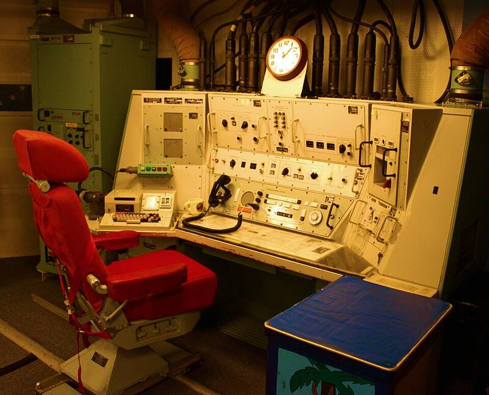

Malmstrom AFB
Montana

In March 1967, missileers reported glowing objects just as ten nuclear missiles at Echo Flight went offline. An Air Force investigation of the failure found no connection to any UFO sighting. 1
Open in the interactive Watcher
Related
- The 1971 nuclear-accidents agreement shows the superpowers took UFOs seriously Claim
- UFOs have watched, and interfered with, U.S. nuclear weapons Claim
- UFOs shut down nuclear missiles at Malmstrom in 1967 Claim
- Robert Salas Person
- Robert Hastings Person
- Robert Sheaffer Person
Sources
- Malmstrom UFO incident Wikipedia